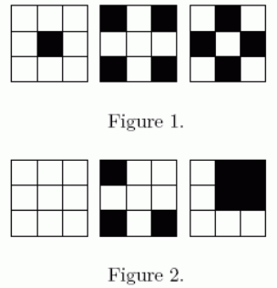

现在富裕的家庭都有了自己的别墅，别墅的院子往往大家选择铺上黑白两色的地砖。如何铺地砖是很有学问的，因为这涉及到美学方面的问题。怎样铺是美的呢？先看下面两组：

Figure 1 中的就被人们认定为比较美丽的，而 Figure 2 中的铺法则是不美丽的了。因为人们认为，如果出现一块 $2 \times 2$ 的区域里，只有一种颜色，那这就是不美丽的，反之则是美丽的。
现在，小 G 的公司拿到了一个任务，一块 $N \times M$ 的院子必须铺上地砖。爱美之心人皆有之，主人家自然希望这块院子地砖的铺法是美丽的，所以他首先想让小 G 的公司拿出设计方案的总数来。
而且这户主人家似乎对 $P$ 这个数特别迷信，所以他希望得到的总方案数对 $P$ 取模后的结果。
仅有一行包含三个用空格隔开的正整数 $N,M,P, 1 \le N \le 10^{100}$
$1 \le M \le 5,1 \le P \le 10000$，分别与题目描述中的数据对应。
输出总方案数对 $P$ 取模后的结果。
2 2 5
4
$1 \le N \le 10^{100}，1 \le M \le 5，1 \le P \le 10000$
 Comet OJ
Comet OJ